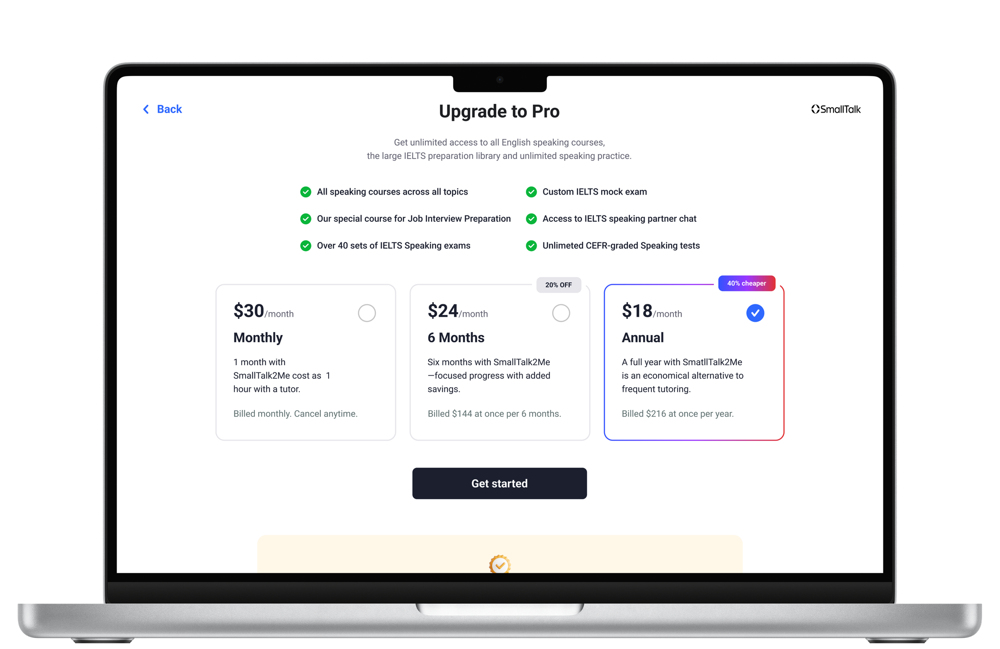
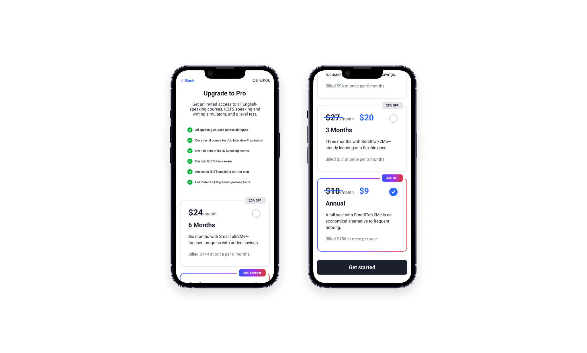
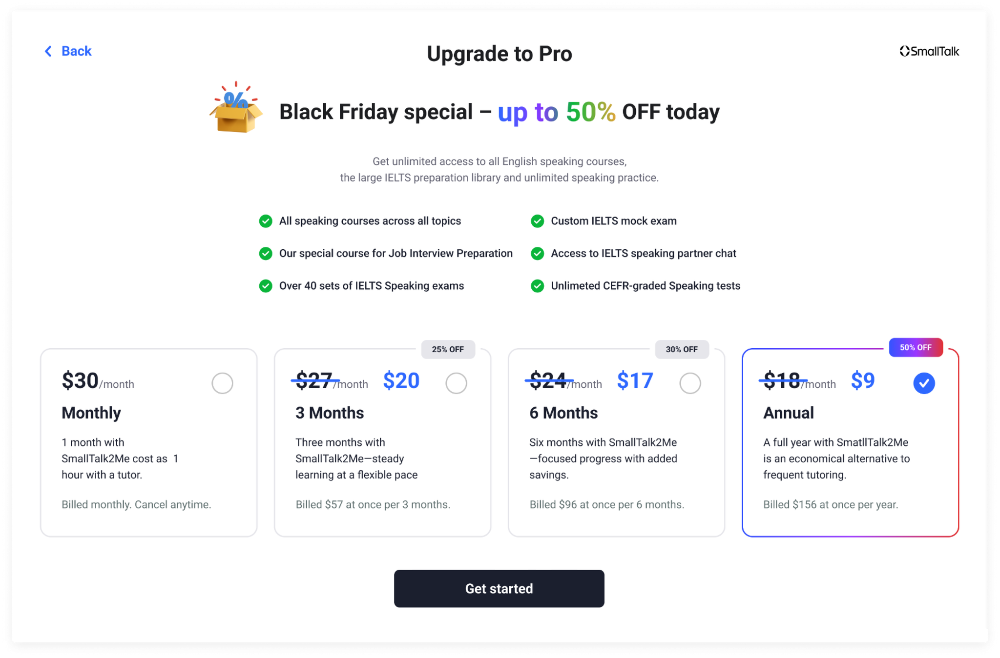

Pricing pages that convert, not confuse
SmallTalk2Me's B2C pricing page was underperforming relative to its traffic. Users were landing on the page, spending time there, and leaving without subscribing. Funnel analysis showed that plan comparison — not checkout — was where users dropped off.
The task: redesign the pricing UI to make plan differences immediately clear, with an emphasis on ease of comparison between the new 3-month and 6-month subscription tiers being introduced.


Data first, design second
Identified the exact scroll depth and click patterns where users abandoned the page. Most drop-offs happened at the plan feature comparison section — users couldn't quickly determine what they'd get for their money.
Benchmarked 8 language-learning and SaaS pricing pages. Identified that the highest-converting examples all led with a single recommended plan rather than asking users to self-select from equals.
Ran a 3-variant A/B test: original, simplified two-tier comparison, and recommended-plan layout with toggle. The recommended-plan variant outperformed on conversion rate and time-to-checkout.
Staged rollout, measurable lift
The redesign launched in phases — the 6-month plan first, then the 3-month option. The 6-month plan gained early traction immediately post-launch. Combined, both plans showed increased subscription conversion and reduced drop-off rates, with improved customer retention in the 60-day post-purchase window.
